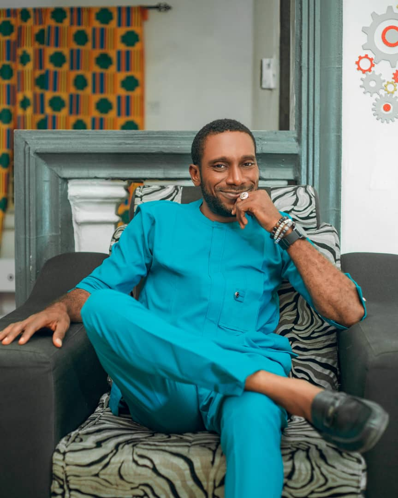
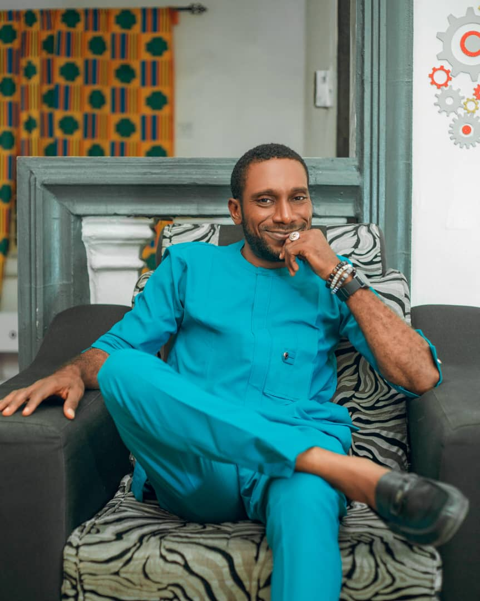

THE GROOM, Edidiong Nicholas, hails from Nto Edino in Obot Akara, Akwa Ibom State. He is approaching the age of 40 and has a diverse range of interests, including cooking, research, and design. He has a particular affinity for the colors red, black, and white. Edidiong Nicholas received his early education at Monica Kindergarten, reputed as the best Nursery and Primary School in the state, located on Imek Road in Ikot Ekpene, Akwa Ibom State. He then attended St. Paul Academy, widely regarded as one of the nation's most impactful secondary schools, also situated on Imek Road in Ikot Ekpene. He furthered his education at the Federal University of Technology, Owerri (FUTO), an esteemed institution known for its creativity, where he earned a Bachelor of Engineering (B.Eng.) degree in Mechanical Engineering with a focus on Industrial and Production Engineering. As a creative individual, Edidiong Nicholas enhances his value by establishing businesses and engaging in various entrepreneurial endeavors. He possesses extensive experience across multiple fields. Currently, he serves as a Hotels Relationship Manager South-South for "hotels.ng," a leading online hotel booking platform in Africa. Inspired by Mr. Mark Essien, the founder of hotels.ng, Edidiong Nicholas transitioned into information and communication technology (ICT), establishing himself as the founder and CEO of EddyTech ICT Services. EddyTech, accessible at eddytech.ng, provides premier solutions in ICT services. In addition to his expertise in engineering and technology, Edidiong Nicholas, a man of style and fashion, founded EddyTech Construction Services, which specializes in interior design and construction. Edidiong Nicholas Affectionately known as EddyTech, is not only a successful entrepreneur but also a jovial individual with a generous and humanitarian spirit.

THE BRIDE, Kate Thompson, hails from Efen Ikot Okoro in Ika LGA, Akwa Ibom State, she is approaching the age of 30. She has a diverse array of hobbies, including Fashion, Research, Music and Cooking. A recent graduate from Akwa Ibom State Polytechnic, department of Office Technology and Management. Her journey in skill development commenced at the age of 18 when she enrolled in a catering school. After acquiring foundational skills in culinary arts, she further pursued her passion for beauty by attending a makeup school. Kate is a successful entrepreneur, serving as the CEO of Karen Empire and also the CEO of Fish Island. Kate is known for her sophisticated sense of style and fashion, she exemplifies a modern, multi-talented woman in her pursuits.
 
